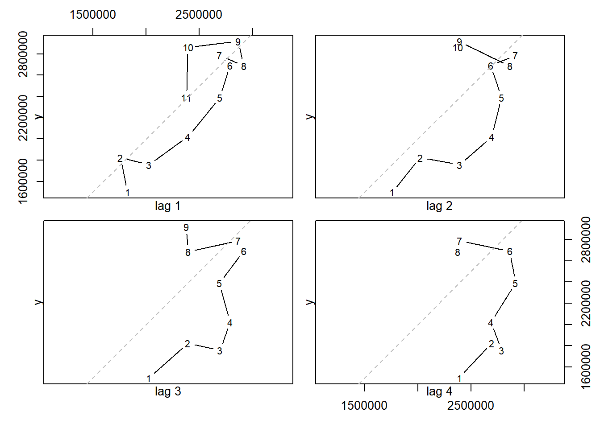
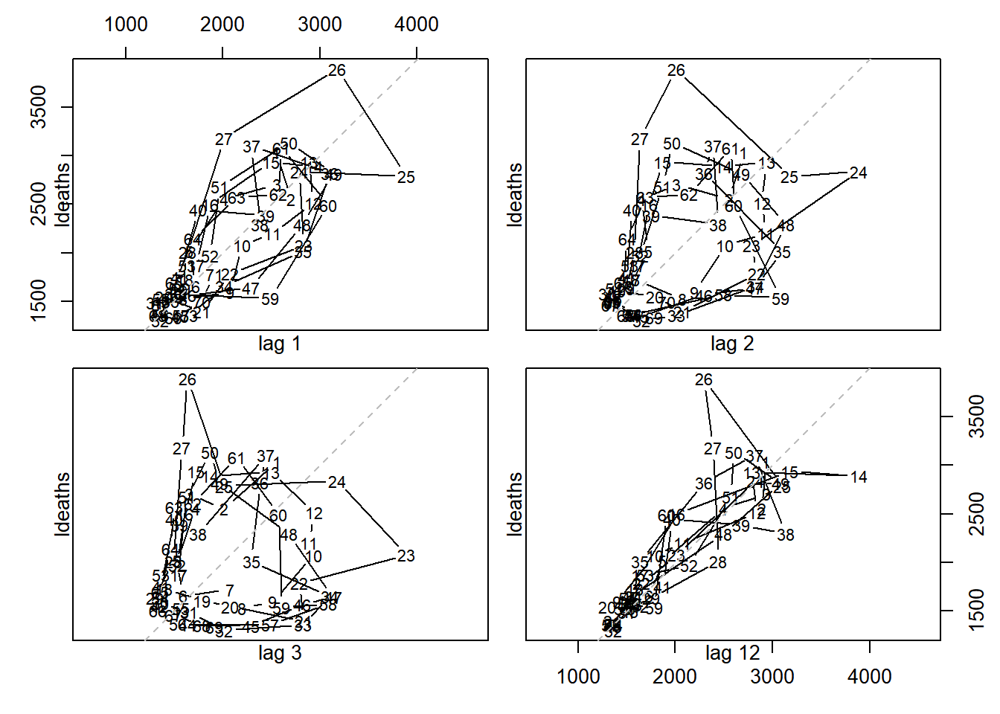
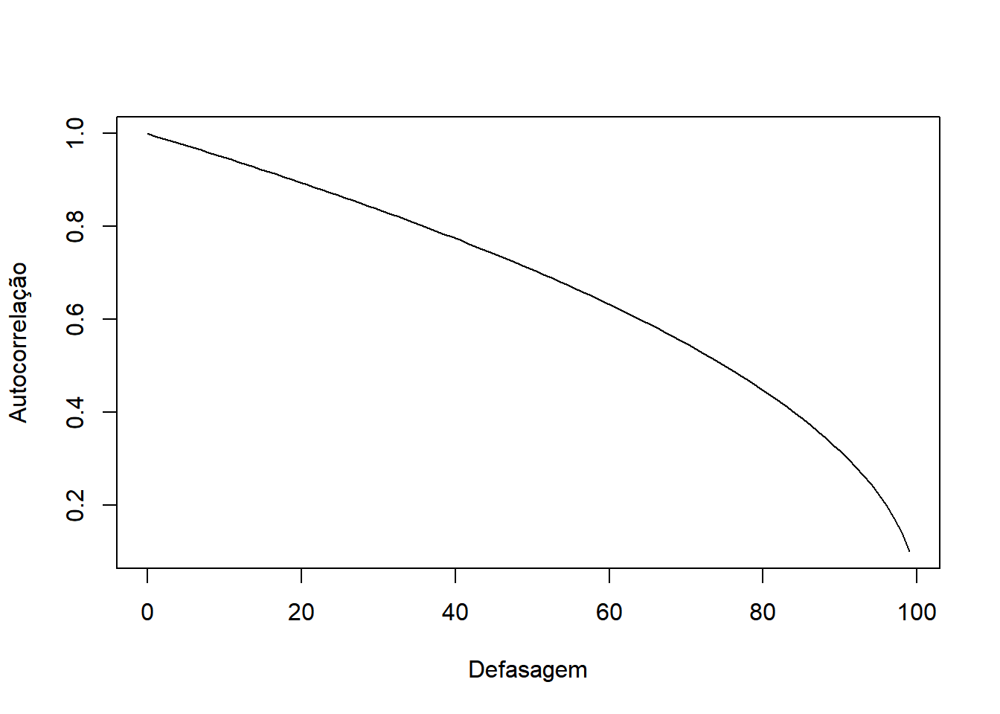
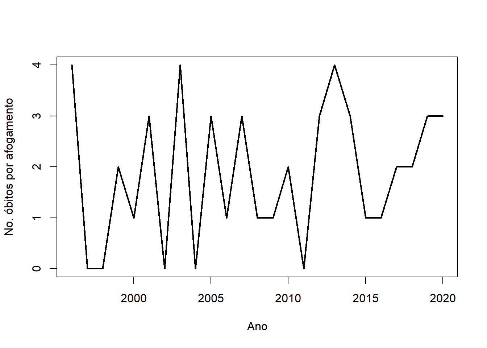
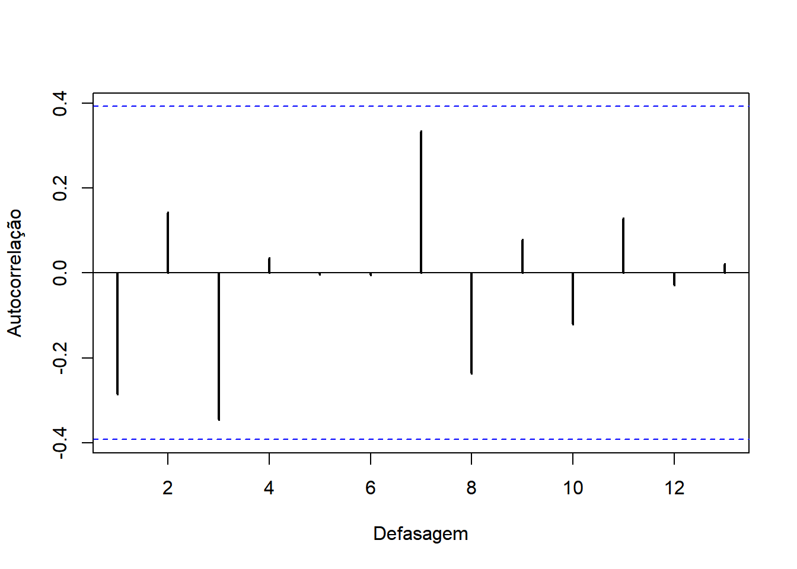

3 Defasagens e autocorrelação
3.1 Gráfico de Defasagens
Denomina-se por defasagem \(h\) (lag, em inglês), um atraso em \(h\) nos índices da série temporal. A tabela abaixo ilustra algumas defasagens para a série \(x_1,\ldots,x_5\)
| Série original | \(h=1\) | \(h=2\) | \(h=3\) |
|---|---|---|---|
| \(x_1\) | |||
| \(x_2\) | \(x_1\) | ||
| \(x_3\) | \(x_2\) | \(x_1\) | |
| \(x_4\) | \(x_3\) | \(x_2\) | \(x_1\) |
| \(x_5\) | \(x_4\) | \(x_3\) | \(x_2\) |
Conforme dito anteriormente, a existência de uma estrutura de dependência entre \(x_t\) e \(x_{t-h}\) permite que a série observada seja utilizada para realizar previsões. Uma ferramenta exploratória interessante para analisar esse tipo de estrutura é gráfico de defasagens (no inglês lag plot). Trata-se de um diagrama de dispersão entre a série original e a série defasada, para algum \(h\) fixado. Abaixo apresenta-se a série de embarques e desembraques no aeroporo Eduardo Gomes para as 4 primeiras defasagens. Os números representam a ordem (temporal) dos pares do diagrama e a linha cinza pontilha é a reta \(y=x\).
Abaixo, a figura mostra o gráfico de defasagens para \(h=1,2,3,12\) considerando a série de mortes por doenças pulmonares no Reino Unido.

3.2 A função de autocorrelação
Definition 3.1 A função de autocovariância da série temporal \(x_t\) é dada por \[\begin{equation} \gamma(s,t) = Cov(x_t,x_s)=E\left[(x_t-\mu_t)(x_s-\mu_s)\right], \end{equation}\] para todo \(s,t\) com \(\mu_j=E(y_j)\) e sua respectiva função de autocorrelção é dada por \[\begin{equation} \rho(s,t)=\frac{\gamma(s,t)}{\sqrt{\gamma(s,s)\gamma(t,t)}} \end{equation}\]
Example 3.1 Considere a série temporal \[x_t= x_{t-1}+\varepsilon_t,\;\;\varepsilon_t\sim\hbox{Normal}(0,1),\] para \(t=1,2,\ldots\) com a condição de que \(x_0=0\) e que \(Cov(\varepsilon_t,\varepsilon_s)=0\;\;\forall s\neq t\). É imediato que \[\begin{equation} x_{t}=\sum_{j=1}^{t}\varepsilon_{j}, \end{equation}\] o que implica em \(x_t\sim\hbox{Normal}(0,t)\). Portanto, \[\begin{align} E(x_t)&=0\\ Var(x_t)&=t. \end{align}\] Além disso, \[\begin{align*} \gamma(t,t-h)&=Cov(x_t,x_{t-h})=Cov\left(\sum_{i=1}^{t}\varepsilon_{i},\sum_{j=1}^{t-h}\varepsilon_{j}\right)\\ &=\sum_{i=1}^{t}\sum_{j=1}^{t-h}Cov\left(\varepsilon_{i},\varepsilon_{j}\right)=\sum_{i=1}^{t-h}Cov(\varepsilon_i,\varepsilon_i)\\ &=t-h \end{align*}\] e \[\begin{equation} \rho(t,t-h)=\frac{\gamma(t,t-h)}{\sqrt{\gamma(t,t)\gamma(t-h,t-h)}}=\frac{t-h}{\sqrt{t(t-h)}}=\sqrt{1-\frac{h}{t}} \end{equation}\] A figura abaixo mostra o gráfico da função de autocorrelação desse processo, considerando uma série de tamanho 100. Note que a série é mais dependente dos valores atuais, embora ainda possua uma autocorrelação alta para defasagens elevadas.
curve( sqrt(1-x/100),0,99, xlab= 'Defasagem', ylab = 'Autocorrelação')
\(\blacksquare\)
Para uma série estacionária, tem-se que \(E(x_t)=\mu\) para todo \(t\), logo \[\begin{equation} \gamma(t-s) = Cov(y_t,y_s)=E\left[(y_t-\mu)(y_s-\mu)\right]. \end{equation}\] Fazendo \(h=t-s\), tem-se \[\begin{equation} \gamma(h)=Cov(y_t,y_{t-h}). \end{equation}\]
A função de autocorrelação (ACF) para um processo estacionário é \[\begin{equation} \rho(h)=\frac{\gamma(h)}{\gamma(0)} \end{equation}\] e ela mede a dependência linear entre \(y_t\) e os valores defasados da série.Sempre será verdade que \(\rho\in[-1,1]\), \(\rho(h)=\rho(-h)\) e, se \(y_{t+h}\) é independente de \(y_t\), então \(\rho(h)=0\).
Example 3.2 Considere a série temporal \[\begin{align}
x_t = \varepsilon_t +\frac{1}{2}\varepsilon_{t-1} \label{exer1}
\end{align}\] onde \(\varepsilon_t\sim\hbox{Normal}(0,\nu)\) para \(t=1,\ldots\), \(\varepsilon_t\) é independente de \(\varepsilon_s\) para todo \(s\neq t\) e \(\varepsilon_0=0\). Como \[\begin{align}
E(x_t)&=E(\varepsilon_t)+\frac{1}{2}E(\varepsilon_{t-1})=0\\
Var(x_t)&=Var(\varepsilon_t)+\frac{1}{4}Var(\varepsilon_{t-1})=\frac{5}{4}\nu\\
\gamma(h)&=\left\{ \begin{array}{ll}
\frac{5}{4}\nu,&\; h = 0 \\
\frac{1}{2}\nu,&\; |h|=1,\\
0,&\;\hbox{caso contrário.}
\end{array} \right.
\end{align}
\]
tem-se que, \[\begin{align}
\rho(h)&=\frac{\gamma(h)}{\gamma(0)}=\left\{ \begin{array}{ll}
1,&\; h = 0 \\
\frac{2}{5},&\; |h|=1,\\
0,&\;\hbox{caso contrário.}
\end{array} \right.
\end{align}\] \(\blacksquare\)
Example 3.3 Seja \(x_t\) um ruído branco. Então \[\gamma(h)=\nu I(h=0),\] e \[\rho(h)=\frac{\gamma(h)}{\gamma(0)}=I(h=0),\] onde \(I(A)\) é a função indicadora da ocorrência do evento \(A\).
3.3 A função de autocorrelação estimada e o correlograma
Considere uma série temporal \(x_1,\ldots,x_n\). Supondo que ela é proveniente de uma série estacionária (ergódico), pode-se estimar \(\gamma(h)\) pelo método da substituição: \[\begin{align}
\widehat{\gamma(h)}&=\frac{1}{n}\sum_{i=1}^{n-h}\left(x_{i+h} - \bar{x}\right)\left(x_{i} - \bar{x}\right)
\end{align}\] e \(\rho\) por
\[\begin{equation}
\hat{\rho}(h)=\frac{\hat{\gamma}(h)}{\hat{\gamma}(0)}
\end{equation}\]
É importante notar que tanto \(\gamma(h)\) quanto \(\rho(h)\) são invariantes a transformações de locação. Por exemplo, seja \(\gamma(h)\) a função de autocovariância de \(x_t\) e considere \(y_t=x_t+a\). Então \(E(y_t)=\mu+a\) e \[E[(y_t-\mu-a)(y_{t-h}-\mu-a)]=E[(x_t-\mu)(x_{t-h}-\mu)]=\gamma(h).\]
O correlograma é um gráfico cartesiano construído a partir dos pontos \((h, \hat{\rho})\). A partir de cada ponto é desenhada uma linha, semelhante a um gráfico de barras. Como \(\hat{\rho}(0)=1\), a implementação desta função em softwares estatísticos pode variar com \(h=0\) ou em 1. Por exemplo, a função acf do pacote stats começa na defasagem 0, enquanto a função Acf do pacote forecast (ou ainda a acf do pacote TSA) começam na defasagem 1.
Example 3.4 A série abaixo representa o número anual de óbitos por afogamento na cidade de Manaus, entre 1996 e 2021. Os dados foram obtidos do Ministério da Saúde (http://tabnet.datasus.gov.br/), considerando o código internacional de doenças (CID10) W70 - Afogamento e submersão conseqüentes a queda dentro de águas naturais.
url <- 'https://docs.google.com/spreadsheets/d/13MdzvZB5U85MkLy97ZRytkylikJu7rJoC1WL0XjKw-c/edit?usp=sharing'
require(data.table)
dados <- fread(url)
afogamentos <- ts( dados[,2], start = 1996)ts.plot(afogamentos, lwd = 2, main = '', xlab = 'Ano', ylab = 'No. óbitos por afogamento')
A figura abaixo mostra o correlograma dessa série. Observe que as autocorrelações amostrais observadas são baixas. Esse tipo de comportamento é esperado em um ruído branco. Como a série não oscila em torno de zero, um modelo razoável seria \[y_t=\mu+\varepsilon_t,\] onde \(\varepsilon_t\) é um ruído branco. Nesse caso, \(\bar{y}_n=1,88\) é uma estimativa para \(\mu\).
acf(afogamentos, lwd = 2, main = '', xlab = 'Defasagem', ylab = 'Autocorrelação')
\(\blacksquare\)
Sem perda de generalidade, assuma que \(x_t\) é um processo estacionário com \(\mu=0\). Para uma defasagem \(h>0\), considere a hipótese \(H_0:\rho(h)=0\). Sob \(H_0\), o processo estacionário é um ruído branco e a distribuição da função de autocorrelação amostral é \(N(0,1/n)\). Portanto, uma região de rejeição ao níve de 5% de significância para um teste baseado nessa distribuição é
\[R={\hat{\rho}(h): \hat{\rho}(h)|>\frac{2}{\sqrt{n}},\] Este é o valor da linha pontilhada que aparece no correlograma na Figure fig-acf_afogamentos.
3.4 Testes para a autocorrelação
Na seção anterior mostrou-se como testar \(H_0:\rho(h)=0\), para um \(h\) fixado. Como várias autocorrelações para diferentes defasagens são avaliadas simultaneamente, o correto seria testar \(H_0: \rho(h)=0\;\;\forall h=1,\ldots,q\), onde \(q\) é o valor máximo da defasagem a ser testado. Considerando a região de rejeição dada anteriormente, pela desigualdade de Bonferroni,
\[\begin{align}P(\hbox{Rejeitar }H_0|H_0\hbox{ é verdadeira})&=P\left(\cup_{h=1}^q\left\{ \hat{\rho}(h)>\frac{2}{\sqrt{n}}\right\}| H_0\hbox{ é verdade}\right)\\ &\leq \sum_{h=1}^qP\left( \hat{\rho}(h)>\frac{2}{\sqrt{n}}| H_0\hbox{ é verdade}\right)\\ &<q\alpha\end{align}\]
Portanto, a probabilidade de cometer o erro tipo 1 pode aumentar na medida que testamos mais de uma defasagem.
Como alternativa, considere a mesma hipótese nula. Se todas as autocorrelaçãoes, de defasagens 1 até \(q\), são baixas, não há evidências contra \(H_0\). Com esse espírito o teste de Ljung-Box (1978) utiliza a estatística \[Q_{LB}=n(n+2)\sum_{h=1}^q \frac{\hat{\rho}(h)^2}{n-h}\] e rejeita \(H_0\) se \(Q_{LB}>\chi^2_{1-\alpha,q}\), onde \(\chi^2_{\lambda,n}\) é o quantil \(\lambda\) da distribuição \(\chi^2_n\).
O teste de Box-Pierce (1970) possui o mesmo objetivo e tem a mesma regra de decisão, mudando apenas a estatística de teste para
\[Q_{BP}=n\sum_{h=1}^q \frac{\hat{\rho}(h)^2}{n-h}.\]
Example 3.5 Para a série de óbitos anuais por afogamentos em Manaus, tem-se que os teste Ljung-Box e Box-Pierce não rejeitam a hipótese de ruído branco.
Box.test(afogamentos, type = 'Ljung-Box')
Box-Ljung test
data: afogamentos
X-squared = 2.2888, df = 1, p-value = 0.1303Box.test(afogamentos, type = 'Box-Pierce')
Box-Pierce test
data: afogamentos
X-squared = 2.0345, df = 1, p-value = 0.1538\(\blacksquare\)